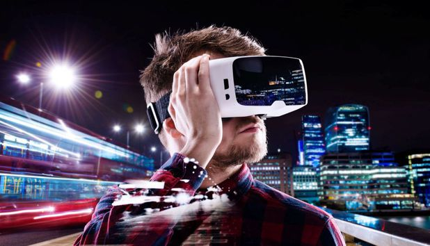
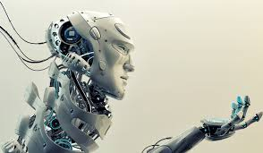
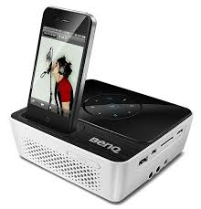
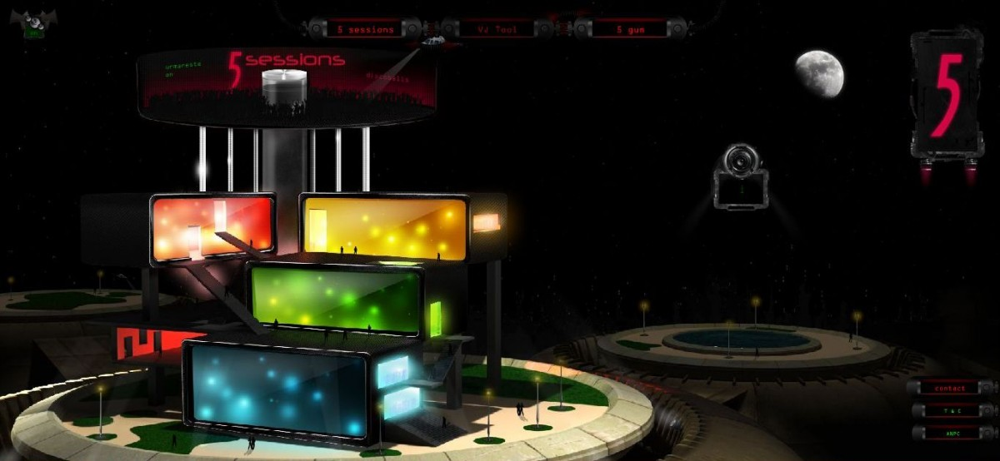
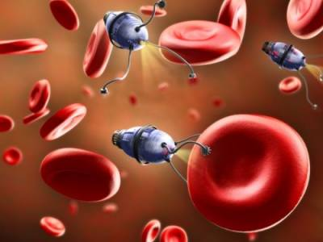
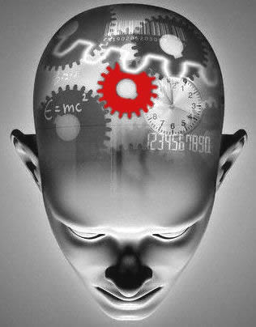

10 Trenduri care ne pot influenţa viaţa în 2017

Samsung Electronics prezintă zece trenduri care vor influenţa felul în care vom trăi anul viitor, dar care pot avea impact şi dincolo de 2017. Dezvoltate împreună cu Samsung Design Europe şi Foresight Factory, aceste trenduri se suprapun pe un spectru larg de evoluţii culturale, sociale şi tehnologice care vor defini modul în care vom trăi, cumpăra şi munci anul următor, scriu cei de la Ce se întâmplă doctore.
Trendurile sunt:
- Minimalismul şi simplitatea:
- Societatea fără vârstă:
- Inteligenţa artificială (AI) şi antrenorii inteligenţi:
- Căutătorii de poveşti:
- Amplificarea trăirilor:
- Următoarea generaţie de dispozitive portabile:
- Familia reţea:
- Experienţele multisenzoriale:
- Nanotehnologia în televizorul nostru:
- Tehnologia tăcută pentru purificarea minţii:
Vom ceda impulsului şi vom înlocui dezordinea cu calitatea. Ne vom îndrăgosti de lucrurile elegante şi minimaliste, cu performanţe ridicate, dar cu un design simplu.
Generaţia Baby Boomers acceptă potenţialul tehnologic, în loc să îl excludă. Fiind conectaţi, învăţând, creând, lucrând mai îndelungat şi fiind mai conştienţi cu ajutorul tehnologiei, putem sfida ipotezele îmbătrânirii.
Roboţii învaţă nu numai din limbajul nostru, dar şi de la noi, ajungând în cele din urmă să fie antrenori inteligenţi pe baza a ceea ce au înţeles din comportamentul nostru.

Tendinţa de dezvoltare personală este amplificată în condiţiile în care mulţi dintre noi folosim tehnologia pentru a valorifica fiecare minunt al vieţii noastre.
Pe măsură ce activităţile noastre intră tot mai mult în rutină, folosim tehnologia pentru evadare şi amplificarea trăirilor. Experienţele de „mixed reality”, ce îmbină realitatea virtuală şi realitatea augmentată, ne vor ajuta să percepem mai intens divertismentul, călătoriile sau sportul.
Vom migra de la accesorii de monitorizare portabile, la senzori care pot detecta starea de spirit sau condiţia fizică şi care sporesc performanţa şi ritmul de învăţare. Pastilele digitale sau dispozitivele ingerabile, care sună a ficţiune, intră pe piaţă.

Vom vedea creşterea familiilor conectate la reţea, folosind tehnologia pentru învingerea provocărilor emoţionale, financiare, chiar şi fizice.
Gustul, mirosul şi simţul tactil se îmbină cu stimulii vizuali pentru a crea o experienţă multisenzorială.

Nanotehnologia, în special particulele Quantum Dot, va fi următorul nostru superstar pe segmentul televizoarelor. Ne aşteptăm ca aceasta să genereze o revoluţie în generaţia următoare de tehnologie, în materie de televizoare, dar şi de sănătate.

În ziua de astăzi, ne verificăm telefoanele în medie de 80 de ori pe zi, dar aceeaşi tehnologie ne va ajuta în curând să scăpăm de acest act. Nu trebuie să ne deconectăm deoarece tehnologia tăcută, precum cea Gear IconX, oferă finalitatea produsului conectat, însă totodată deconectat.

Sursa: